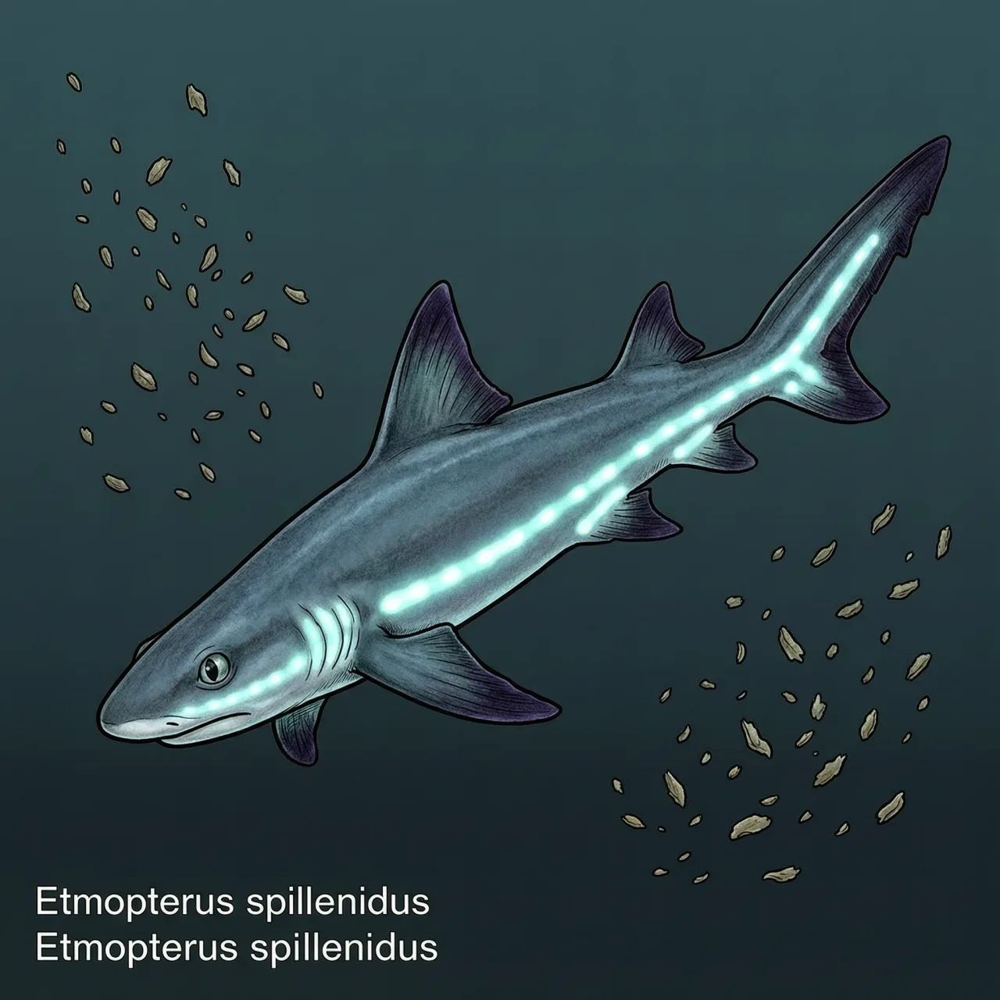
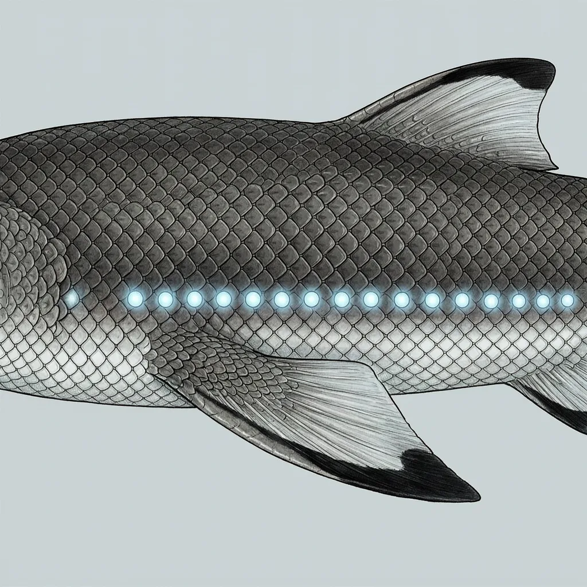

斯普兰汀乌鲨是西太平洋深海里的一种小型鲨鱼，分布于日本沿海与台湾东北部海域，模式产地在日本。它属于乌鲨属，体侧与腹缘各排着一条发光器带，灯笼鲨的称呼正由此而来。它捕食头足类和小型鱼，目前评估为无危，但生活史资料仍然有限。
日本近海的标本在1988年被定为一个新种，模式产地就落在日本。它的分布记录见于西太平洋的日本沿海与台湾东北部海域。它是乌鲨属的成员，这个属多是深水的小型鲨鱼，斯普兰汀乌鲨也住在深海，光线在那里已经很弱——正是发光器能派上用场的背景。除此之外，它的生活环境细节几乎无人记录。
乌鲨属常被人叫作灯笼鲨，斯普兰汀乌鲨的特别处在于亮带的排布：体侧与腹缘各有一条细密的发光器带，种加词splendidus取华丽之义，点名的就是这条带子。它栖身深水，以头足类和小型鱼为食。至于这身灯具体怎么用——诱捕猎物、提供照明还是同类间的信号——还没有定论，整个属的生活史资料都寥寥。
斯普兰汀乌鲨名列无危，但这个稳字分量很轻：它的体长、寿命、繁殖方式都没有可靠数字，生活史近乎空白，连躲避天敌的方式也说不上来。无危在这里更接近暂未发现威胁，而不是已经被充分了解。一尾挂着灯的小鲨鱼，人类其实还没看清它是怎么活的。
